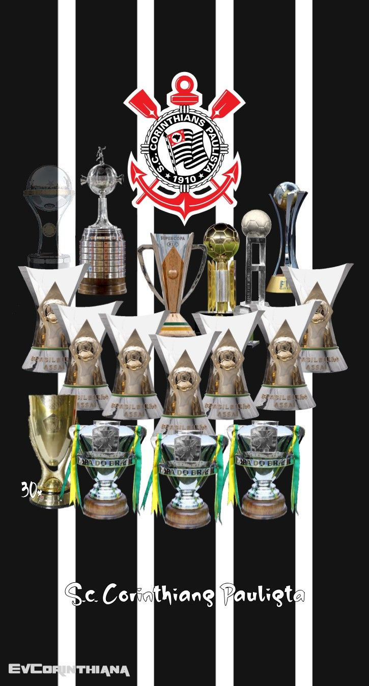

Titulos
No cenário internacional, o clube é bicampeão do Mundial de Clubes da FIFA, com taças erguidas nos anos de 2000 e 2012. Além disso, conquistou de forma invicta a Copa Libertadores da América no ano de 2012 e obteve o título da Recopa Sul-Americana logo na temporada seguinte, em 2013
Em âmbitos nacional e interestadual, o clube acumula quatorze taças oficiais, incluindo sete títulos do Campeonato Brasileiro da Série A (1990, 1998, 1999, 2005, 2011, 2015 e 2017), quatro da Copa do Brasil (1995, 2002, 2009 e 2025), uma conquista da Série B em 2008 e um bicampeonato da Supercopa do Brasil (1991 e 2026). No Torneio Rio-São Paulo, soma cinco títulos conquistados em 1950, 1953, 1954, 1966 e 2002. Regionalmente, o Corinthians destaca-se como o maior vencedor do Campeonato Paulista, ostentando 31 taças estaduais ao longo de sua história.
